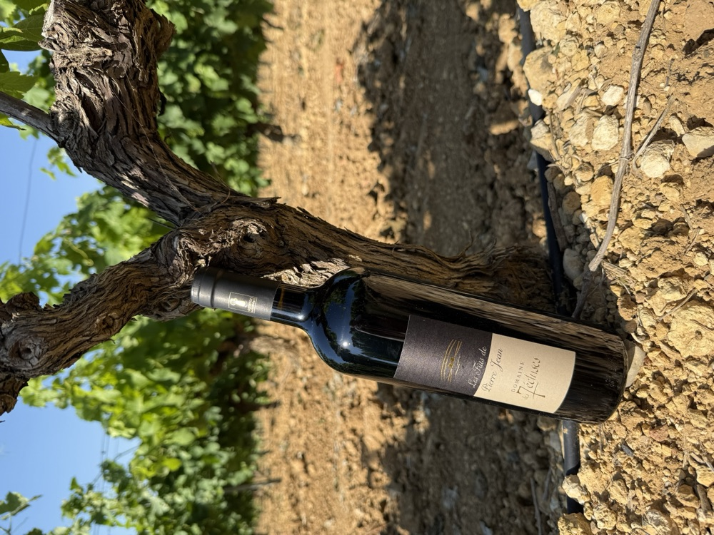

Vin Rouge · Cuvée Prestige
Les Fûts de Pierre Jean
Élevé en fûts de chêne, c'est notre cuvée de prestige. Complexe, généreux, marqué par le temps passé en barrique. Un vin qui porte le prénom de père en fils, comme une signature.
Disponible au caveau